Page freshness: Last updated Dec 2016.
All |
Non-engineering |
Robotics |
Software |
Mechanical
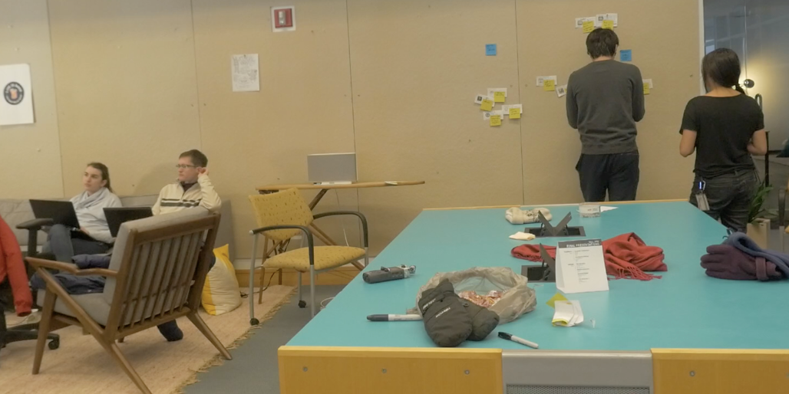
FOUNDRY IDEA TESTING
Using the sprint method to test viability, feasibility, and desirability of 5 product concepts in 5 days.
OPERATIONS CONSULTING
Developed donor and partner acquisition strategies for Womentum, a non-profit.
THE ZONE OF PROXIMAL DEVELOPMENT
Another hand-drawn guide.
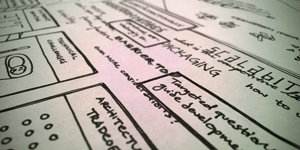
LEARNING THROUGH PROTOTYPING
A hand-drawn guide.
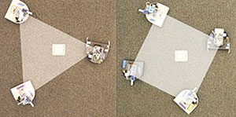
PROJECT POLYGON: SWARM NEATOS
Create regular polygons based on the changing number of agents in a swarm.
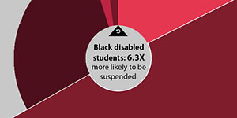
SUPSENDED, NOT SUPPORTED
A sociology-flavored, data-driven exploration of disability's role in the school-to-prison pipeline.
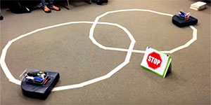
PROJECT CARIBOU: AUTONOMOUS NEATO
Using computer vision to line-follow, obey stop signs, and avoid collisions.
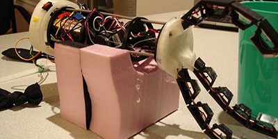
INTUITIVE CONTROL & FEEDBACK UNDER-ELBOW PROSTHETIC
A prosthetic arm that gives the user feedback and control on the cheap.
SOUND CHECK: SAFE SPACE LOCATOR
Product concept to aid domestic violence hotline volunteers find locations to take calls.
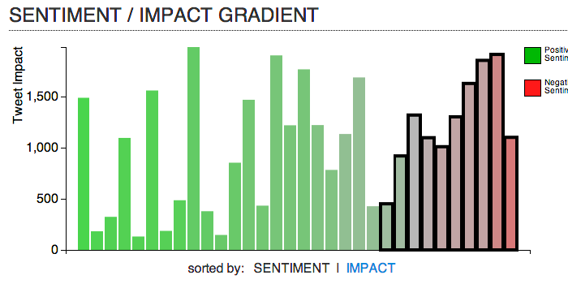
TWITTER FIREHOSE VISUALIZATION
Making an intelligence analyst tool consumer-facing.
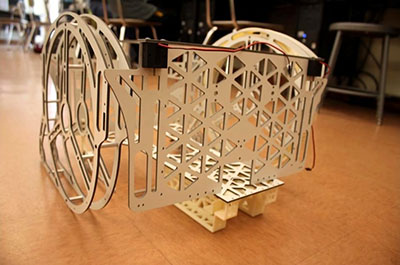
PROJECT MORPHEUS: MERCURY
A shapeshifting reconnaissance bot.
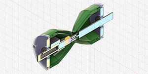
ENGEN: SCOOTER ACCESSORY FOR MOBILE CHARGING
I was an educator, electrical designer, and productineer all rolled into one.
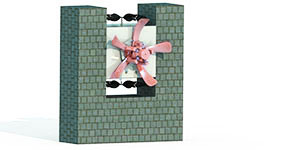
KINETIC SCULPTURE: UNDULATING FLOWER
A wind-powered mechanical system designed to be installed at Olin College.
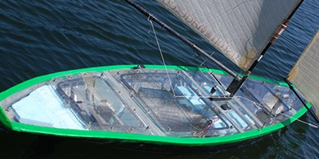
OLIN ROBOTIC SAILING
A quest to autonomously traverse the Atlantic Ocean.
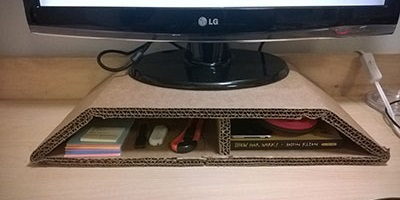
CARDBOARD CARPENTRY
Hacking life with low-tech adaptations.
CULTURAL CONVERSATIONS
Staring issues of culture, ethnicity, and race of and at Olin, head on.
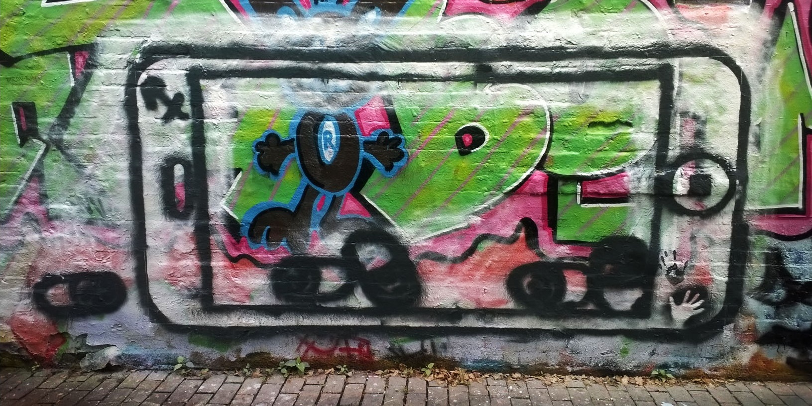
CAMBRIDGE STREET ART
Vinyl and spraypaint.
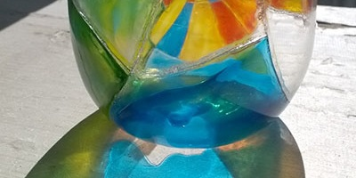
THE BROKEN GLASS PROJECT
A study in diligence and meticulousness.